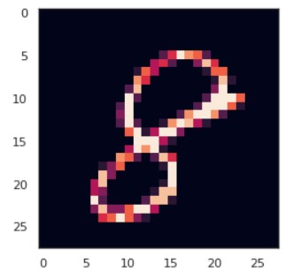
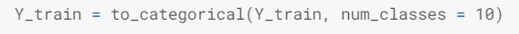
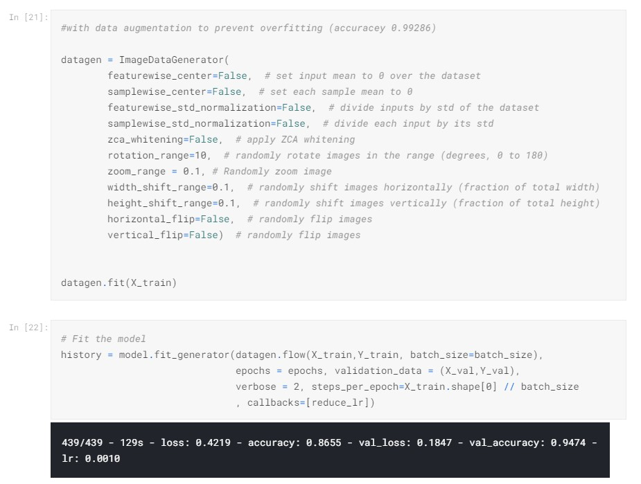

Overview
MNIST ("Modified National Institute of Standards and Technology") is the de facto “hello world” dataset of computer vision. Since its release in 1999, this classic dataset of handwritten images has served as the basis for benchmarking classification algorithms. As new machine learning techniques emerge, MNIST remains a reliable resource for researchers and learners alike. In this competition, the goal is to correctly identify digits from a dataset of tens of thousands of handwritten images.
This project is my first attempt creating a neural network, specifically a CNN (Convolutional Neural Network). The overall process for machine learning projects is still very similar to others on the blog, but this time, instead of using Scikit-Learn's library of algorithms, I used the Keras API (Tensorflow backend) to create a neural network. In this blog post, I will be highlighting the key steps in solving this kind of problem and for the full python notebook, you can find that in this link to my Kaggle notebook here.
Process
View Data: The dataset provided by MNIST is an iconic data set to get your bearings when it comes to learning ML. The data provided is already split into a training and test set, so that step is already done. Before cleaning the data, it is important to see what the data looks like. Once you know what it looks like, you can determine what needs to be done in order to clean and prepare the data for the model you decide to build. Below is histogram of the data distribution.
Histogram of Data Distribution
Normalize: After checking for any null values in the pixels of each picture, I am ready to begin normalizing the data. Normalizing data is essentially changing the numeric values in the data to a common size, without distorting the differences in the range of values. With this data, the normailizing I performed is grayscale normalization. By doing this, it reduces the effect of illumination and color differences. Since colors are measured by RGB values of 255, dividing each pixle (data point) by 255 the model will run much faster over values from 0 to 1 than values from 0 to 255. Now that the normalizing is done, I began to reshape the data.
Preview of One Image
Reshape: The data provided are images that are 28x28 px images that has been put into a Pandas Dataframe as a 1D vector of 784 values (28 squared). Keras requires an extra dimension in the end which correspond to channels. MNIST images are gray scaled so it use only one channel. For RGB images, there is 3 channels, we would have reshaped 784px vectors to 28x28x3 3D matrices.
Label Encoding: The labels for the data are the digit numbers from 0 to 9 and these need to be encoded. This way, instead of the labels being the digits themselves, they will become a vector of a series of 0s and 1s. For example the digit 4 will look like this [0,0,0,0,1,0,0,0,0,0] and the digit 9 will look like [0,0,0,0,0,0,0,0,0,1]. This transformation should be used to encode target values, i.e. Y, and not the input X. It can also be used to transform non-numerical labels (as long as they are hashable and comparable) to numeric labels.
Defining the Model: The model I decided to build is a CNN (Convolutional Neural Network). Using the Keras API, the framework is relatively simple and you just have to add one layer of the network at a time. The first is the convolutional (Conv2D) layer. It is like a set of learnable filters. Each filter transforms a part of the image (defined by the kernel size) using the kernel filter. The kernel filter matrix is applied on the whole image. Filters can be seen as a transformation of the image. The second layer I used in CNN is the pooling (MaxPool2D) layer. This filter takes two adjacent pixels and uses the maximum value. This layer is often used to reduce the amount of computing and overfitting. When datasets become very large computing cost is an important factor to consider. The next layer that I added is the Dropout layer. Dropoout is a regularization method where a proportion of nodes in the layer are randomly ignored (setting their wieghts to zero) for each training sample. This forces the model to learn with random pieces of the image dropped from the original image. It is another technique that helps with over fitting the model and improves generlizations. In order to add some non linearity to the network, the Relu rectifier is added. The Flatten layer is use to convert the final feature maps into a one single 1D vector. It combines all the found local features of the previous convolutional layers. In the last layer(Dense(10,activation="softmax")) the net outputs distribution of probability of each class.
CNN Architechture
Setting the Optimizer and Annealer: A score function, loss function, and optimisation algorithm are essential parts of understanding what the model is doing and how well it is performing. The loss function is a measure of how incorrect the model is. It is the error between observed labels and predicted ones. In this case, since the data is set up as classifications from encoding it, the "categorical_crossentropy" function will be used. More importantly, the optimizer must also be defined because imporve the parameters to minimize the loss by filtering kernel values and eliminating bias of neurons. The metric function "accuracey" is used to evaluate the performance of the model, pretty much the opposite of the loss function.
To make the optimizer coverage faster and minimize the loss function, I used an annealing method of the learning rate. With the ReduceLROnPlateau function from Keras.callbacks, I choose to reduce the learning rate by half if the accuracy is not improved after 3 epochs. (An epoch is one cycle through the full training dataset)

Data Augmentation: When it comes to improving the model, you can always try to make your dataset larger, so it has more to learn from. This works but is inefficient and not always possible. In the case of the images, the purpose of this step is to slightly change the images so the model can learn more efficiently. Some popular augmentations people use are grayscales, horizontal flips, vertical flips, random crops, color jitters, translations, rotations, and much more. By adding these augmentations, you could easily double or tripple the size of your data.
Results
Evaluation of the Model: It is important to always evaluate the results and check your work. A great way to see just how accurate out model performed is to plot a confusion matrix.
From the bottom left of the martix, you can see that there are some trends of inaccuracey. My first thought is that if I increased the epochs or number of cycles, those numbers would become more accurate. Not everyone has the neatest hand writing so, lets see some of the digits the mode predicted incorrectly. Perhaps these digits are written so poorly, most humans would misread them.

Next Steps
This kind of model is used more broadly and for more practical applications each year. The most common would probably for something like mobile checking deposits. Your phone can take a picture and recognize the digits printed on the checks being deposited. If it has not been implimented already, I have a feeling that lots of publications will use this to digitize old documents or articles that only exizted in print and digital copies did not exist when these items were written. This would allow publishers, like The New York Times, to create databases that are easily searchable for historical articles. Another industry that could use this is the leagal industry. Instead of pouring through filing cabinets of old documents and volumes of books, a digitized databased could save them hours searching.
Data Source by Kaggle Digit Recognizer Competition.